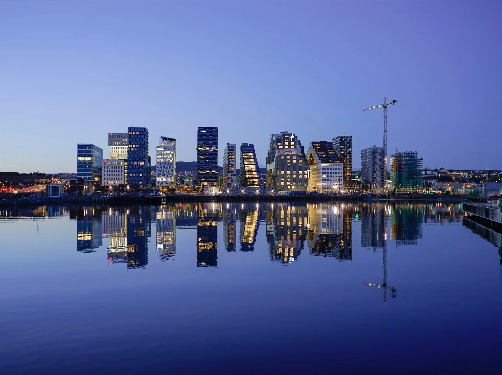

The honest answer: one to two days covers Oslo's famous sights — but the visitors who fall for Oslo almost always wish they'd stayed a little longer, and spent that extra time beyond them.
Here's what we've learned living here. Oslo's headline attractions are genuinely worth seeing — Vigeland Park, the Opera House, the Bygdøy museums, the Royal Palace. But they're finite. A day, maybe two, and you've seen them. What we hear more and more from visitors is that once the box-ticking is done, they want something real: fewer crowds, and more of the Norwegian nature the city is wrapped in. And that's exactly where Oslo gets interesting — because most of what makes it special sits just under the surface.
So "how many days" really depends on how deep you want to go. Here's the breakdown, from people who live here.
Plenty of people pass through Oslo for a single day — at the start or end of a Norway trip, or on a cruise stop. It's enough, just, to get the essentials. Oslo's centre is compact, and the marquee sights cluster tightly: the Opera House and Bjørvika waterfront, Aker Brygge harbour, the Royal Palace, Karl Johans gate and Vigeland Park are all within a small radius.
The mistake people make on a one-day visit is spending half of it working out transport and routes. If you only have a day, the priority is to see the most while wasting the least time getting between things — which is precisely what makes a guided bike loop such a good fit for a single day. Our Oslo City Highlights tour covers the waterfront, the Opera House, Vigeland Park and the Royal Palace in one relaxed two-hour ride, with pickup at your hotel, leaving the rest of your single day free for a museum, a long lunch or the harbour.
Two days is where Oslo opens up. Day one for the city centre — the waterfront, the parks, the palace, and a wander through a neighbourhood like Grünerløkka with its cafés and the Akerselva river path. Day two for the fjord and the museums on the Bygdøy peninsula, the green, forested headland just west of the centre that holds the Fram, Kon-Tiki and cultural-history museums alongside beaches and open water.
This is the rhythm nearly every good Oslo itinerary settles on, and it works because the two halves of the city — urban core and fjord peninsula — each deserve their own day. With two days you also have the luxury of going at a human pace rather than sprinting between sights.
A third day is where Oslo stops being a checklist and starts being a place. This is the day to get out of the centre — into the Marka forest that wraps around the city, where gravel roads run through pine and birch past mirror-still lakes, all within half an hour of downtown. It's the side of Oslo that locals love most and visitors most often miss.
A third day is also room for the city's quieter pleasures: Oslo's specialty coffee scene, which has a genuine claim to being among the best in the world, or its modernist architecture tucked into the residential hills west of the centre. These are the experiences that turn a trip from "I saw Oslo" into "I understood it."
Beyond three days, you're either going deep on Oslo — its full museum roster, its food scene, day-long forest rides, the islands of the inner fjord — or using it as a comfortable base for trips further afield. Both are valid. Oslo rewards slow travel more than its reputation suggests; it's a city that reveals itself in cafés, parks and quiet streets rather than in a frantic dash between landmarks.
Here's what rarely makes the standard itinerary: Oslo is one of the only capital cities in the world where real wilderness begins at the end of a metro line. Twenty minutes from the centre, the Nordmarka forest opens into 1,700 square kilometres of gravel roads, pine and mirror-still lakes — best explored by gravel bike or on one of our guided forest rides. This is the side of Oslo locals love most, and it's the single best reason to give the city an extra day.
And it goes further than the forest. Did you know some of Norway's most striking summits are within day-trip reach of Oslo? A peak like Gaustatoppen is a proper full-day adventure — while closer to home, Vettakollen is an easy, accessible viewpoint with a sweeping view over the city and the fjord. Our sister company Oslo Hiking Tours runs guided hikes to both. If "how many days in Oslo" is really a question about how much of Norway you can fit in, the mountains are closer than you think.
Day count interacts with season. May through September is Oslo at its best — long daylight, warm-ish weather, everything open, and famously long, bright summer evenings that effectively add hours to your day. Spring and autumn are quieter and still very rewarding. Winter is shorter on daylight but has its own appeal; just plan for fewer outdoor hours and build the day around them.
Whatever the length of your trip, the principle holds: Oslo is compact, green and made for moving through under your own steam. The less time you spend figuring out logistics, the more of the city you actually get to see.
However long you have in Oslo, the best of it is outdoors — by bike or on foot. Explore the city and forest with us, rent a gravel bike to go your own way, or head for the hills with our sister company.
Guided bike tours Bike rental Oslo Hiking Tours →Two full days suits most first-time visitors — one for the city centre, one for the fjord and Bygdøy museums. One day works for a stopover; three or more lets you add the Marka forest and the city's neighbourhoods.
For a stopover, yes — the centre is compact and the main sights cluster closely. The key is to minimise time spent on transport and routing so you can see as much as possible.
Yes. A third day lets you escape the centre into the surrounding forest and explore quieter interests like Oslo's coffee scene or modernist architecture — the parts of the city most short visits miss.
May to September offers the best weather, longest daylight and most to do, with long summer evenings a particular highlight. Spring and autumn are quieter; winter has shorter days but its own charm.
Because the city is compact and largely flat near the centre, a guided bike tour covers far more ground than walking and removes the navigation and transport guesswork — ideal when your time is limited.
Yes. The Nordmarka forest begins 20 minutes from the centre and is ideal for gravel biking, and several Norwegian summits are within day-trip reach of Oslo — from the easy, accessible Vettakollen viewpoint over the city to the full-day Gaustatoppen. Our sister company Oslo Hiking Tours runs guided hikes to them.